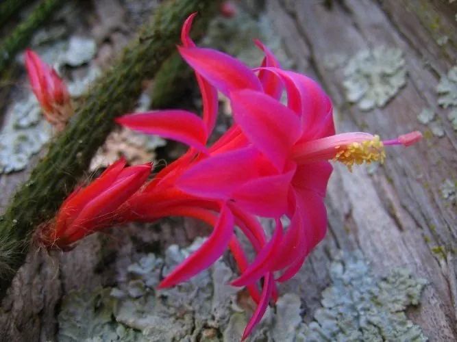

多肉植物 · 植物界
鼠尾掌 Aporocactus flagelliformis

仙人掌科鼠尾掌属多肉，茎细长下垂如鼠尾，春季开出粉红色花朵，适合垂吊栽培，原产墨西哥，是经典的吊挂仙人掌。
- 分类
- 门被子植物门纲木兰纲目石竹目科仙人掌科属鼠尾掌属
- 栖息环境
- 墨西哥干旱山地的树干与岩石上，喜光、耐旱、通风
- 地理分布
- 原产墨西哥，世界各地广泛盆栽，中国各地常见
- 保护级别
- 暂无评估；CITES 附录Ⅱ（仙人掌科）
物种志
鼠尾掌为仙人掌科鼠尾掌属多年生肉质植物，茎细长、圆柱形，直径 1–2 厘米，长可达 0.5–2 米，初直立后下垂，表面有 10 余条浅棱，棱上密生浅黄色小刺。花侧生，漏斗形，粉红色或紫红色，长 4–6 厘米，花期春季；果实为球形浆果。
鼠尾掌原产墨西哥的干旱山地，野生状态下附生于树干或岩石上，喜温暖、阳光充足和通风良好的环境，耐旱怕积水。它茎细长下垂、密生小刺，形似老鼠尾巴，因此得名；春季开花时粉红色花朵沿茎排列，十分醒目，适合用吊盆悬挂栽培。栽培以颗粒土为主，浇水见干见湿，冬季控水；繁殖以茎段扦插为主，扦插苗第二年即可开花。
形态与习性
- 株高茎长 0.5–2 米，直径 1–2 厘米
- 花期春季，花粉红色或紫红色
- 果期花后结球形浆果
- 光照喜充足阳光，夏季适度遮阴
- 水分耐旱，见干见湿，忌积水
- 土壤颗粒为主、排水良好的矿质土
- 繁殖茎段扦插
- 主要用途吊盆垂吊观赏、阳台装饰
趣味知识
- 鼠尾掌的茎细长下垂、密生小刺，形似老鼠尾巴，因此得名。
- 它适合用吊盆悬挂栽培，春季粉红色花朵沿茎开放，十分醒目。
- 野生鼠尾掌附生于树干和岩石上，靠气生根攀附。
- 茎段扦插容易生根，剪下一段晾干伤口后插入颗粒土即可。